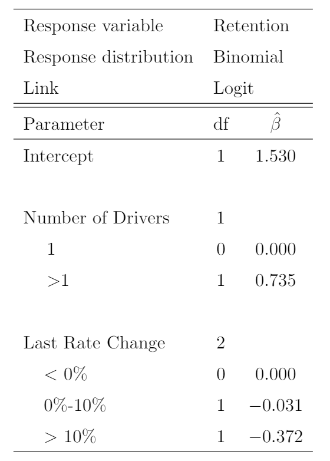

Midterm - Exam
Problem 1
You are given the following summary statistics:
\[\begin{align*} n &= 5 \\ \sum{x} &= 26 \\ \sum{y} &= 68 \\ \sum (x_i-\bar{x})^2 &= 64.8 \\ \sum (x_i - \bar{x})(y_i-\bar{y}) &= 156.4 \\ \sum (y_i-\bar{y})^2 &= 401.2 \end{align*}\]Determine the equation of the regression line, using the least squares method.
\(y = 1.049 + 2.414x\)
\(y = 1.049 - 2.414x\)
\(y = -2.414 - 1.049x\)
\(y = 2.414x - 1.049x\)
The correct answer is not given by (A), (B), (C), or (D).
Problem 2
Two actuaries are analyzing dental claims for a group of \(n = 200\) participants. The predictor variable is education, with 0 and 1 as possible values.
Actuary 1 uses the following regression model:
\[Y = \beta + \epsilon\]
Actuary 2 uses the following regression model:
\[Y = \beta_0 + \beta_1 \times Education + \epsilon\]
Given \(R^2 = .9\). Calculate the F-statistic to test whether the model of Actuary 2 is a significant improvement over the model of Actuary 1.
- 1712
- 1792
- 0.8
- 1782
- The correct answer is not given
Problem 3
Peter observes the following coffee prices in his company cafeteria:
- 1 bagel for 1.00 (USD)
- 2 bagel for 1.50 (USD)
The cafeteria announces that they will begin to sell any amount of bagels for a price that is the value predicted by a simple linear regression using least squares of the current prices.
With the new pricing model, how much Peter would save if he bought 10 bagels instead of 5 bagels twice?
- It would cost him more so he would not save any money.
- He would save 0.5 (USD)
- He would save 1 (USD)
- He would save 1.5 (USD)
- The correct answer is not given
Problem 4
You are given the following data
| \(y\) | \(x_1\) | \(x_2\) |
|---|---|---|
| 2 | 1 | 1 |
| 3 | 1 | 1 |
| 4 | 2 | 2 |
| 6 | 0 | 0 |
| 10 | 3 | 0 |
You are using the following model:
\[ y_i = \beta_0 + \beta_1 x_{i1} + \beta_2 x_{i2} + \epsilon_i, \quad i = 1, 2,..., 6 \]
You have determine
\[ (X'X)^{-1} = \begin{bmatrix} 0.75 & -0.25 & -0.25\\ -0.25 & 0.1944 & -0.0278 \\ -0.25 & -0.0278 & 0.3611 \end{bmatrix} \]
Determine \(\hat{\beta_1}\).
- -2.00
- -0.75
- -0.5
- 1.75
- The correct answer is not given
Problem 5
You fit a multiple linear regression to a data of 200 observation and 4 predictors. You have determined that the coefficient of determination of the model is 0.8. Calculate the F-statistics to test the significant of the model.
- 45
- 85
- 125
- 195
- The correct answer is not given
Problem 6
You are given
A sample size of a dataset is 100
The regression equation \[y = \beta_0 + \beta_1 x_1 + \beta_2 x_1^2 + \beta_3 x_2 +\beta_4 x_3 + \epsilon\] was to fit the data and resulted in \(R^2 = 0.9\)
A second regression equation \[y = \gamma_0 + \gamma_1 x_1 + \gamma_2 x_1^2+\epsilon\] was to fit to the data.
The F statistic used to test whether class section is significant variable is 10.
Determine the \(R^2\) of the second regression.
- .60
- .65
- .75
- .85
- The correct answer is not given
Problem 7
The following two models were fit to 20 observations:
Model 1: \(y = \beta_0 + \beta_1 x_1 + \beta_2 x_2 + \epsilon\)
Model 2: \(y = \beta_0 + \beta_1 x_1 + \beta_2 x_2 + \beta_3 x_1x_2 +\beta_4 x_1^2 +\beta_5 x_2^2 + \epsilon\)
The result of the regression are:
| Model Number | Error Sum of Squares | Regression Sum of Squares |
|---|---|---|
| 1 | 110 | 15 |
| 2 | 78 | RSS2 |
Calculate the Regression Sum of Squares of the second model.
- 15
- 125
- 47
- 78
- The correct answer is not given
Problem 8
A regression of the return on a mutual fund (\(y\)) on five predictors plus an intercept is performed. The \(F\) statistic for the regression is \(F = 20\) and the \(R^2 = 0.8\). Determine the sample size of the dataset used for the regression.
- \(n \leq 21\)
- \(n = 31\)
- \(n = 41\)
- \(n = 51\)
- The correct answer is not given
Problem 9
You are given the following information for a GLM of customer retention

Calculate the probability of retention for a policy with 10 drivers and a prior rate changes of 7%.
- Less than 0.85
- At least 0.85, but less than 0.87
- At least 0.87, but less than 0.89
- At least 0.89, but less than 0.91
- At least 0.91
Problem 10
You are given the follow.

Calculate the predicted number deaths for a population of 200,000 females age 25
- Less than 3
- At least 3, but less than 5
- At least 5, but less than 7
- At least 7, but less than 9
- At least 9
Problem 11
You are given the following output of an GLM.
Calculate the probability of a policy with 2 years of tenure that experienced at a 15% prior rate increase and has 150,000 in amount of insurance will retain into the next policy term.
- Less than 0.6
- At least 0.6, but less than 0.7
- At least 0.7, but less than 0.8
- At least 0.8, but less than 0.9
- At least 0.9
Problem 12
You are given:
- The random walk model
\[ y_t = y_0 + c_1 + c_2 + c_3 +...+c_t, \]
where \(c_i, (i = 1, 2,..., t)\) denote observations from a white noise process.
- The following ten observed values of \(c_t\):
| t | 1 | 2 | 3 | 4 | 5 | 6 | 7 | 8 | 9 | 10 |
|---|---|---|---|---|---|---|---|---|---|---|
| \(y_t\) | 2 | 5 | 10 | 13 | 18 | 20 | 24 | 25 | 27 | 30 |
- \(y_0 = 0\)
Calculate the 9 step-ahead forecast, \(\hat{y}_{19}\) .
Problem 13
You are given an AR(1) with known parameters as follows.
\[\begin{align*} y_t &= .5y_{t-1} + 1 + \epsilon \\ y_T &= 7 \end{align*}\]Calculate the three step ahead forecast of \(y_{T+3}\)
Problem 14
You are given the following time series
| \(t\) | 1 | 2 | 3 | 4 | 5 | 6 |
|---|---|---|---|---|---|---|
| \(y_t\) | 1 | 3 | 5 | 7 | 11 | 20 |
Forecasting \(y_{7}\) using exponential smoothing with \(w = .1\)
Problem 15
A classification tree is being constructed to predict if an insurance policy will lapse. A random sample of 100 policies contains 30 that lapsed. You are considering two splits:
Split 1: One node has 20 observations with 12 lapses and one node has 80 observations with 18 lapses.
Split 2: One node has 10 observations with 8 lapses and one node has 90 observations with 22 lapses.
The total entropy after a split is the weighted average of the entropy at each node, with the weights proportional to the number of observations in each node.
Determine which of split is better based on total entropy